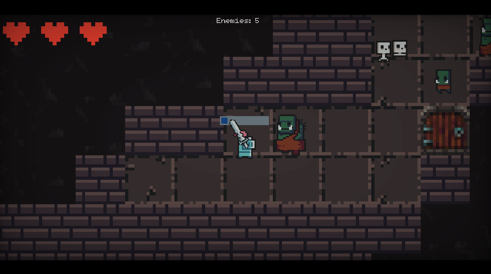
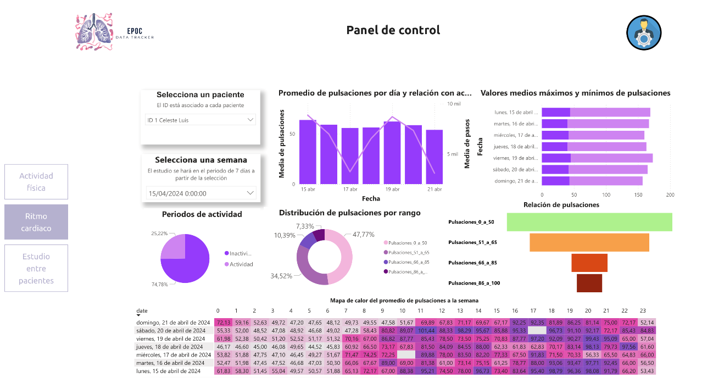
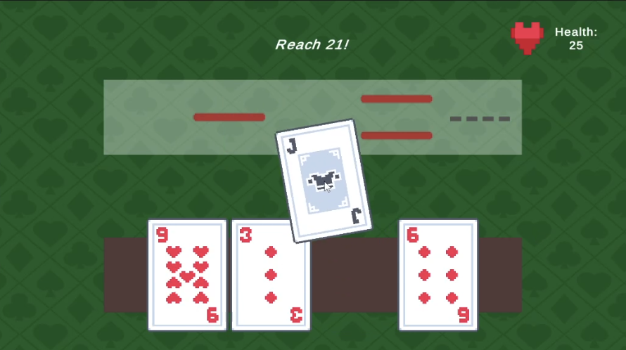

Trabajos finales
Esta es una selección de algunos trabajos finales de carrera tutorizados. Se pueden localizar fácilmente otros trabajos finales en la colección docencia del repositorio institucional de la Universidad de La Laguna.
Desarrollo de videojuegos serios para la rehabilitación de personas con daño cerebral
TFM
Videojuegos
Desarrollo de un videojuego controlado mediante eye tracker para
emplearlo en la rehabilitación de pacientes con movilidad reducida
ocasionada por una lesión cerebral.
Generación procedural de planetoides en videojuegos
TFG
Videojuegos
Desarrollo de un algoritmo de generación procedural para crear planetoides en tres
dimensiones a gran escala. Para demostrar la viabilidad del algoritmo, se implementa
un prototipo de videojuego donde se genera un planetoide que el jugador puede explorar y
dónde puede recoger recursos.

Generación procedural de contenido 2D en videojuegos
TFG
Videojuegos
Desarrollo de algoritmos para la generación de contenido 2D en videojuegos, utilizando el
motor Godot e incorporando métodos de generación de contenido procedural (PCG) para crear
el mapa del juego. Se han implementado técnicas como el diagrama de Voronoi y Random Walk
para crear un mapa de tipo «mazmorra» en el que el jugador puede moverse.

Deep Learning en videojuegos: Generación de animaciones naturales
TFG
Videojuegos
El objetivo de este trabajo es hacer una implementación de motion matching y
learned motion matching para reproducir animaciones naturales y realistas de
personajes virtuales en 3D en tiempo real, a partir de datos de motion capture,
en el motor Unity.
Uso de herramientas IA y agentes inteligentes en videojuegos
TFG
Videojuegos
El objetivo de este trabajo es investigar y evaluar el uso de herramientas de IA para
en la creación de contenidos para videojuegos. Con estas herramientas se ha creado
un prototipo funcional con un agente capaz de ejecutar tareas concretas en el entorno del juego,
empleando técnicas de aprendizaje automático para optimizar su comportamiento.

Seguimiento de actividad física en pacientes con EPOC mediante relojes inteligentes
TFG
Datos
Salud
Desarrollo de una aplicación para la recogida y análisis de datos de actividad física de pacientes con
enfermedad pulmonar obstructiva crónica (EPOC).

Videojuego Roguelike con temática de juego de cartas
TFG
Videojuegos
Desarrollo de un videojuego con el motor Unity que incluye enfrentamientos inspirados en las mecánicas
del blackjack y del género roguelike. El jugador avanza a través de niveles que requieren el uso
de habilidades y conocimientos adquiridos en partidas anteriores para superar desafíos.
No hay resultados